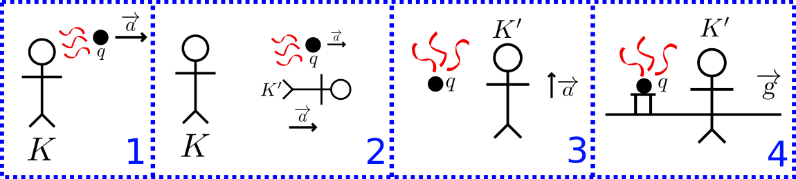

03 February 2019
Let us conduct a simple gedankenexperiment about charges, acceleration, radiation and gravity. Consider an inertial observer K, floating in free-space. Now add to the picture a charged particle q, accelerating away from the observer K with the acceleration \overrightarrow{a}. According to our current physics knowledge, this acceleration should produce an electromagnetic radiation emanating from the accelerated charge, which can be observed by the observer K. (See Larmor formula, Electromagnetic field of an accelerated charge). Now let us think of another observer, K', who is co-accelerating with the charged particle. By applying Einstein’s Equivalence Principle to this system of K' and q, we can transform the acceleration into “standing still in a uniform gravitational field”. You can check out the childish drawing below if you are a bit confused.

After this transformation, a serious problem arises. If the charge still radiates, then it’s a direct violation of Law of conservation of energy: we could just put solar panels (or antennas) around this ever-radiating charge and generate free limitless energy. If the charge does not radiate, this means we have conceded a wrong assumption somewhere along the chain: which does not seem to be the case since both Larmor formula and Einstein’s Equivalence Principle are verified and credible explanations of natural phenomena. However, there is another hidden assumption we have made: which is that “if some radiation is observable by K, then it is also observable by K'”. It seems absurd to question this assumption because after all, radiation of an object must be independent from the states of the observers. As mathpages puts it:
Our consideration of charged particles in a gravitational field seems to suggest that we can always find a system of coordinates (at least locally) with respect to which a charged particle (at a given instant) does not radiate - even though the particle may be radiating at that instant with respect to some other system of coordinates.
Upon tiresome research on the world-wide-web, I have failed to convince myself of a resolution to this apparent paradox. Maybe one of the readers of this post will be the one to “crack it.”
On a side note, I highly recommend mathpages.com for mind-boggling scientific articles.
Paradox of radiation of charged particles in a gravitational field
The elevator, the rocket, and gravity: the equivalence principle
Gründler, Gerold. “Electrical charges in gravitational fields, and Einstein’s equivalence principle”